Search
Find apps and commands with one search. The things you use most show up first, so they're always easy to reach.
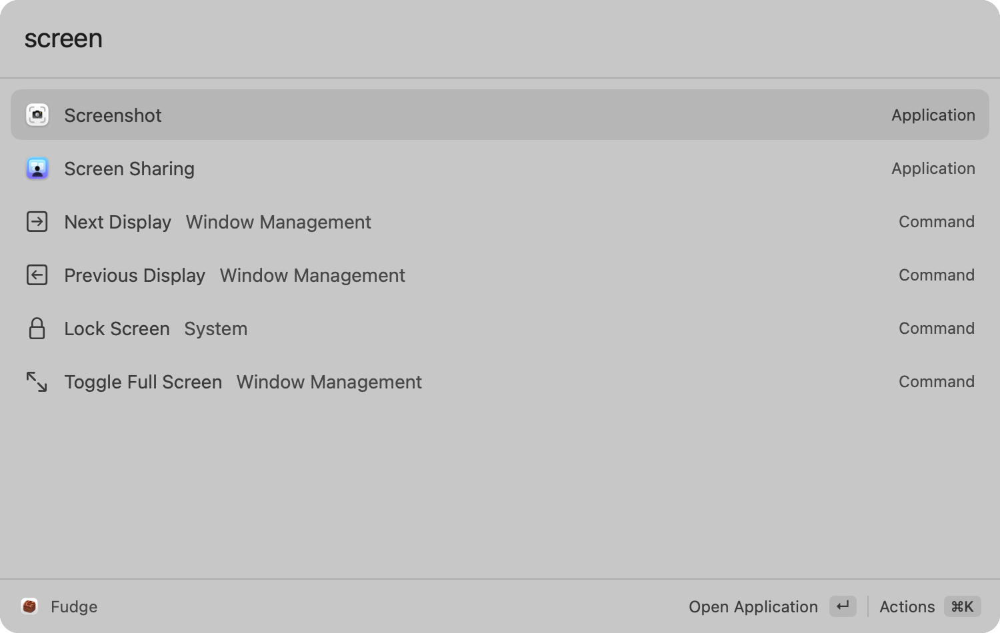
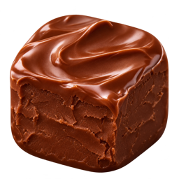
A free, open-source Raycast alternative for Mac.
Keep using most of your favorite Raycast extensions, alongside handy tools built right in. All without a subscription.
Launch apps, find files, search your clipboard history, and run your favorite extensions from one place. Fudge makes the things you do every day a little easier, without getting in your way.
Find apps and commands with one search. The things you use most show up first, so they're always easy to reach.

Do a quick calculation or convert units and time zones without opening another app. You can turn on currency conversions too. Press ↵ to copy the answer.
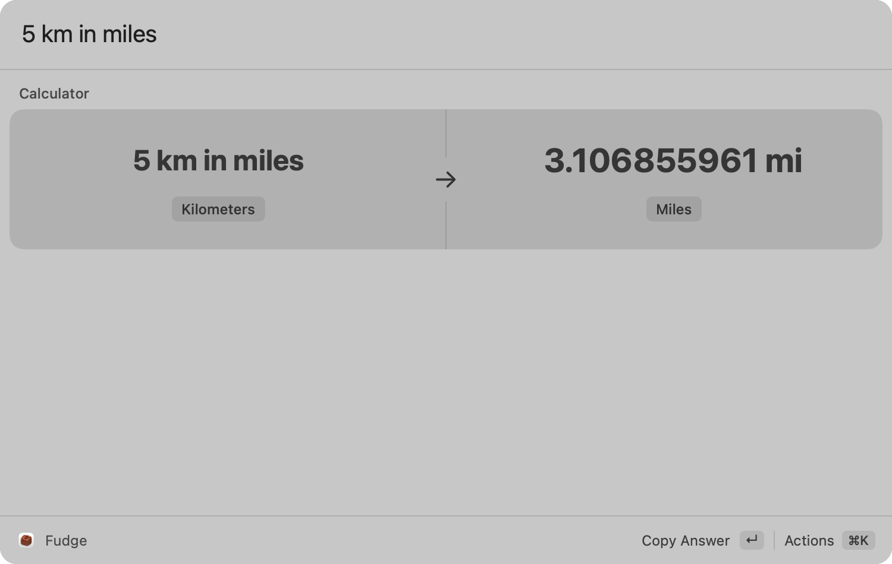
Need something you copied earlier? Find it in Clipboard History and paste it again. It's off by default, and your history is encrypted on your Mac.
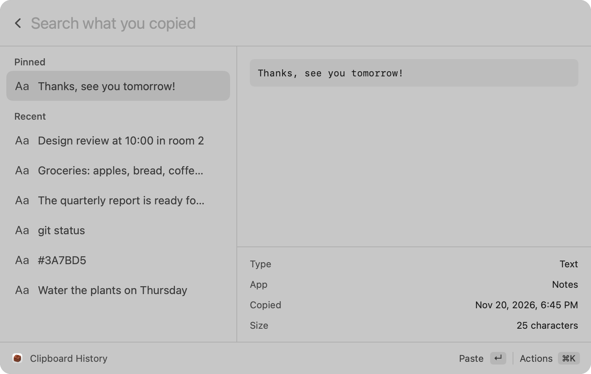
Find the right emoji or symbol by typing its name or a keyword. Press ↵ to insert it into your current app, or ⌘↵ to copy it.
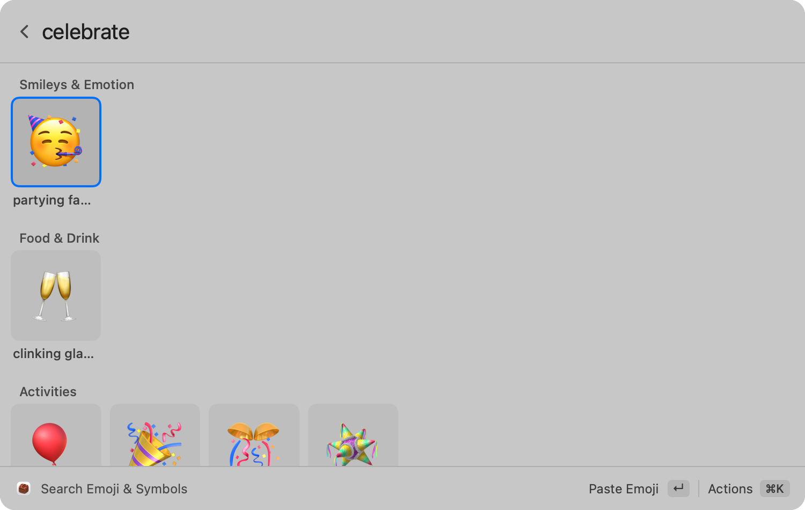
Jump to any open window, even one you've minimized. Search by app or window title. You can also move and resize windows in a few keystrokes: halves, thirds, quarters, centered, or maximized.
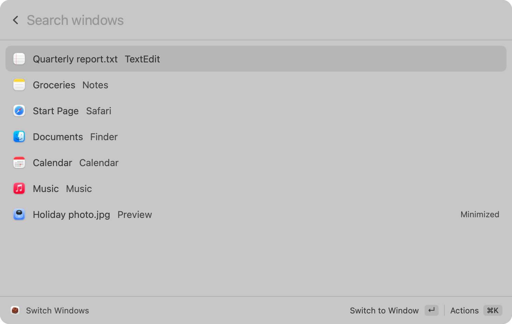
Find files and folders by name using Spotlight. Press ↵ to open a result, ⌘↵ to show it in Finder, or ⌘Y for a Quick Look preview.
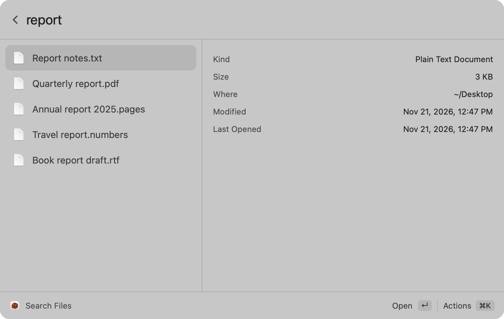
See what's coming up in your Mac calendars, neatly grouped by day. Press ↵ to join a meeting when it has a supported link, or to open the event in Calendar.
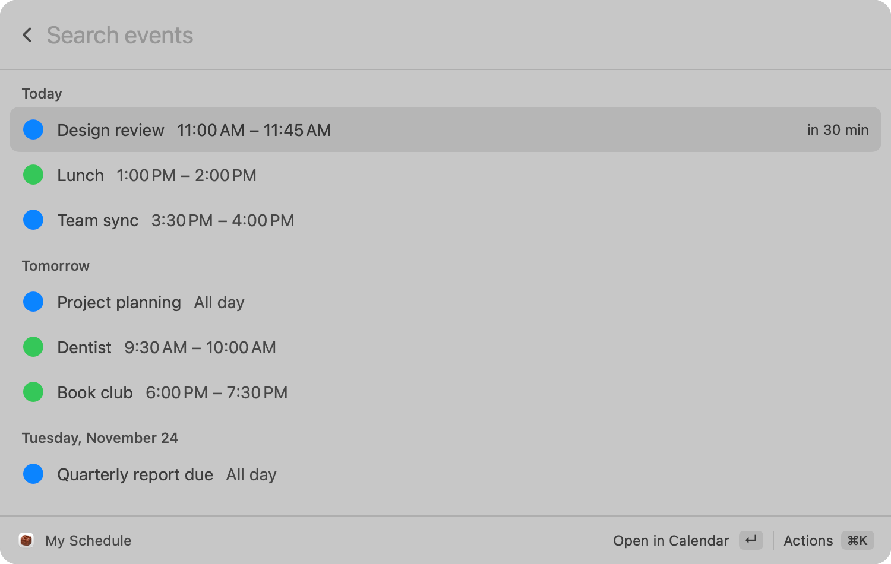
Browse thousands of extensions from Raycast's open-source collection, right inside Fudge. Most work without any changes, and Fudge checks compatibility before you install. Extensions that rely on Raycast AI or its browser extension are marked as unsupported or partly compatible. Even if an extension isn't fully compatible, you can still use the commands that work.
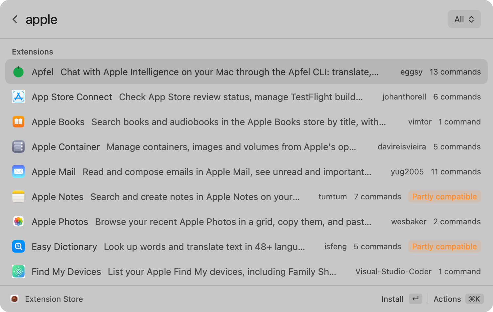
Some extensions need you to sign in to services like GitHub or Jira. Fudge handles this through fudge-oauth, its open-source sign-in service. Use Fudge's server for supported services, or run your own if you prefer. Extensions with their own sign-in can work too when you enable that option in Settings. Your sign-ins are kept in your Mac's Keychain.
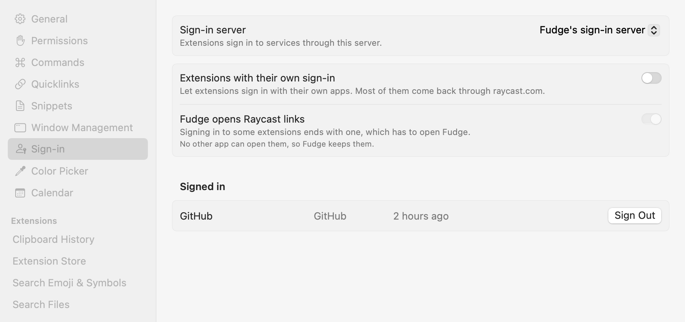
Choose the keyboard shortcut that opens Fudge and set up the window to behave the way you like.
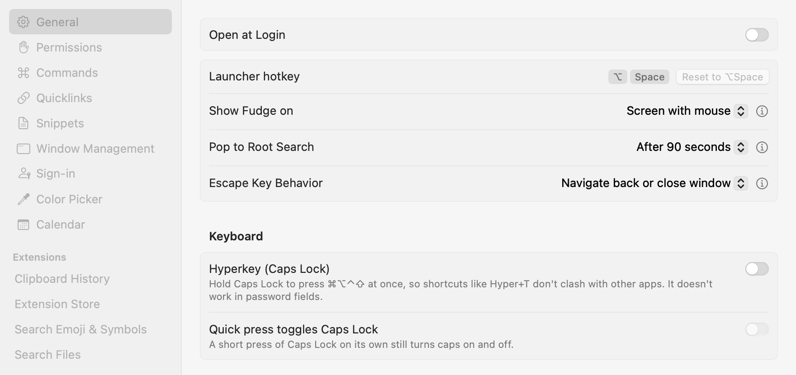
Give any command its own keyboard shortcut or a short alias. Turn off the ones you don't use.
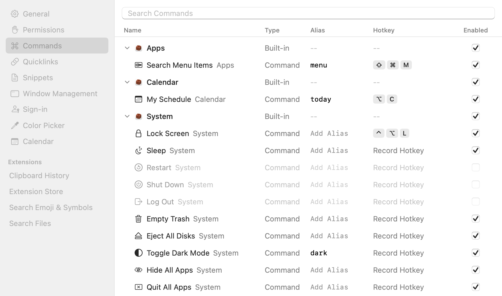
Fudge runs on Apple silicon Macs with macOS 14 or later. If you have an Intel Mac, you can build it from source.